11Product design & build · Fictional e-commerce concept
A drinks shop you can walk into.
One headline, followed from an alien black market to a world map.
Scroll: write, design, build
Quench is fictional. Nothing is sold or shipped, and prices are illustrative.

01Write
The first shop sold alien weapons.
It was fun. But every line was a joke, and it looked like Dr. Mara.
The first draft: Illegal in 14 star systems. Available in yours.
AK · 01The portfolio needed range.
So the subject became drinks.
Four words now say what it sells: the world’s drinks, to pour at home.
The rewrite: The whole world, poured.
02Design
Give every region a stamp.
Grey boxes first. The headline on top, then eight regions to travel to.
AK · 02Browsing should feel like traveling.
Make it feel like Quench.
A night map in ink, one color per region, Fraunces set soft and heavy.
03Build
Open the real shop.
106 pages from one schema. A drink with a missing field fails the build.
AK · 03Live. Pick a stamp.

- 01Write
- 02Design
- 03Build
I set the idea, directed it and reviewed every version.
From the first draft to the live page, you talk to me.
Take a drink apart ↗For the curiousThe video, the full kit, every version and how it was checked
- Project
- Self-initiated e-commerce concept
- Role
- Concept, direction & review
- Deliverable
- Responsive static store with interactive tools
- Tools
- Astro · TypeScript · content collections
Walkthrough
Quench in 34 seconds
A 34-second captioned tour of the finished work. Recorded from the live demo on this site; no sound.
The kit: what Quench shipped, beyond the pages
Measured qualityLighthouse and axe, run October 28, 2026
- 100Performance
- 100Accessibility
- 100Best practices
- 9/10SEO checks
- Accessibility issues (axe, WCAG 2.1 AA)
- 0
- across 6 pages
- Homepage weight
- 276 KB
- everything a first visit downloads
- Largest content painted
- 1.7 s
- simulated mid-range phone, slow 4G
- Layout shift
- 0
- 0.1 or less counts as good
Homepage measured with Lighthouse 12 (mobile) on /sites/quench/, served locally without compression, so live numbers should be at least this good. The one SEO check that fails is “page can be indexed”: demos are kept out of search on purpose because they’re fictional. Rerun with scripts/kit/measure-quality.mjs.
The receipts
The brief
Can an online shop feel like a place you visit, and still be easy to search and buy from?
Most stores are grids of products. Quench sells the ingredients and tools for drinks from around the world, so it also has to explain them: where a drink comes from, how it is made and what is in it. That is a lot of reading for a shop, and a lot of shopping for a reference book.
- 01Make browsing feel like traveling, not scrolling a grid
- 02Turn every encyclopedia entry into something you can buy from
- 03Keep search, filters and checkout plain and fast
- 04Look nothing like the other projects in this portfolio
All 9 versionsFrom a weapons store to a drinks shop.
It began as a shop for alien weapons. Seven versions later it sells drinks, and it went from a magazine to a place you walk into.
Void Bazaar
“Illegal in 14 star systems. Available in yours.”
An alien black market for weapons and cars, priced in gems. Fun, but it shared its dark, deadpan look with Dr. Mara.
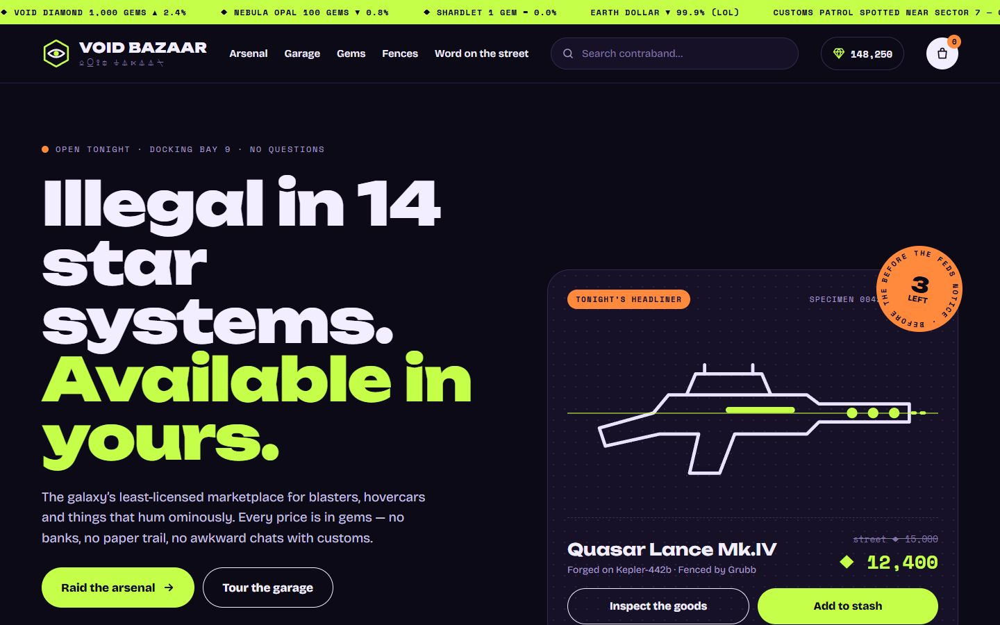
Eight directions
The same store drawn eight ways: pulp ads, an auction house, a field manual, a ’90s desktop, an alien-made shop, a game inventory, a riso zine and a fashion lookbook. The lookbook won, but its products looked unreal.
- Eight style boards
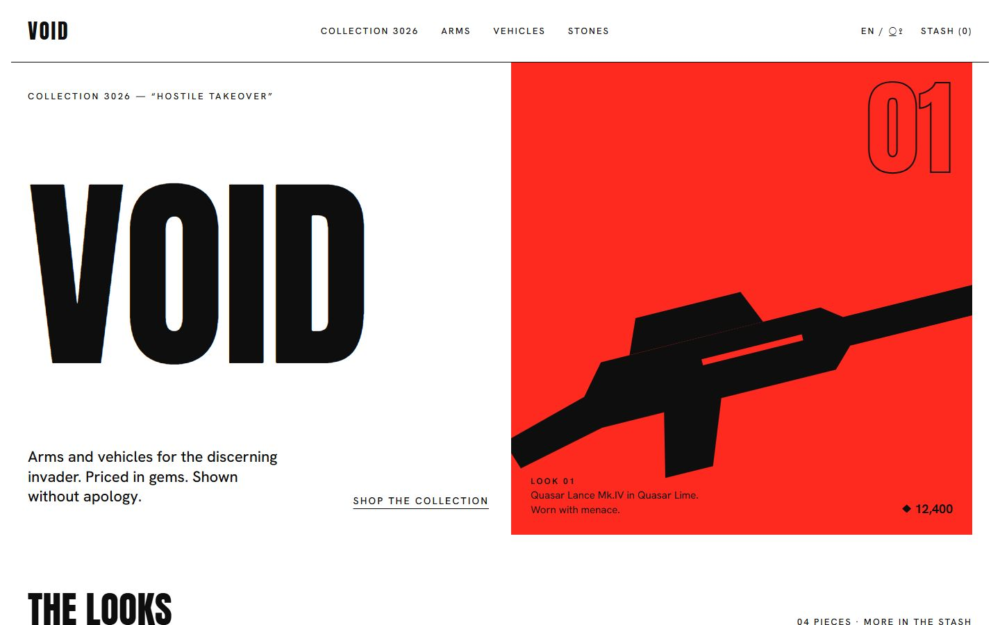
Hero 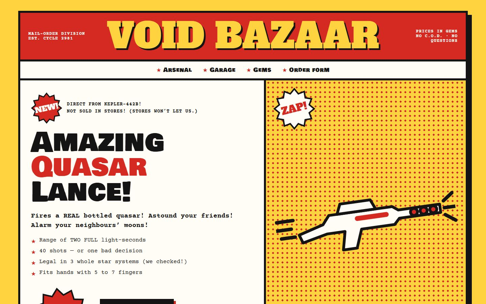
One of eight: pulp mail-order A new subject
Drinks instead of weapons: a shop that is also an encyclopedia, organized by country, category and whether a drink contains alcohol. Oatly’s lookbook set the tone; the design had to be its own.
Quench, editorial
“The whole world, poured.”
Studio-style images and drawings working together, one color per category and a zero-proof switch. It read well, but it felt like a magazine, not a shop you could step into.
- Studio-style image recipe
- Category colors
- Zero-proof
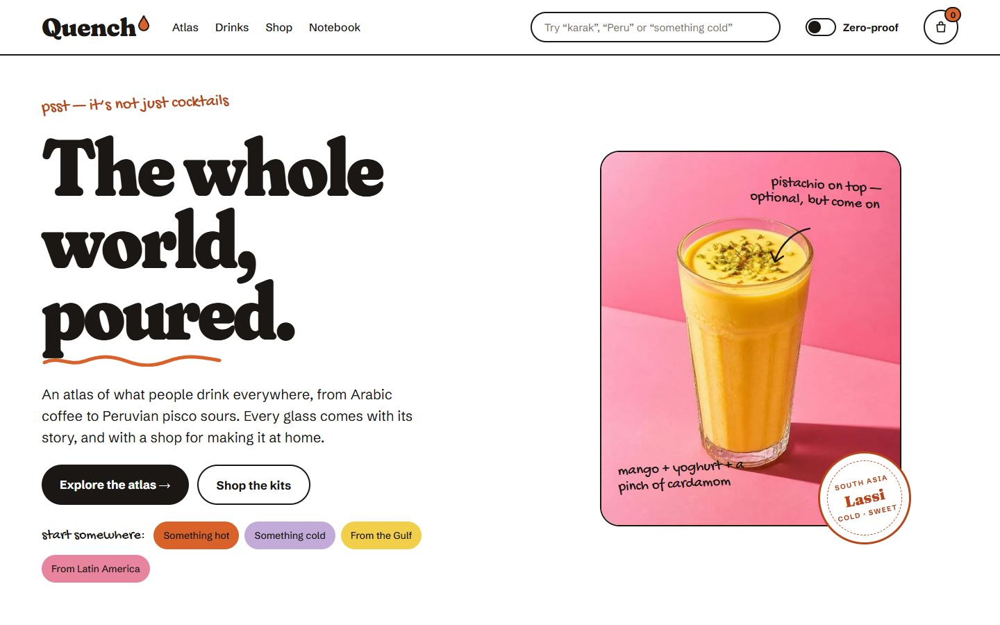
Hero 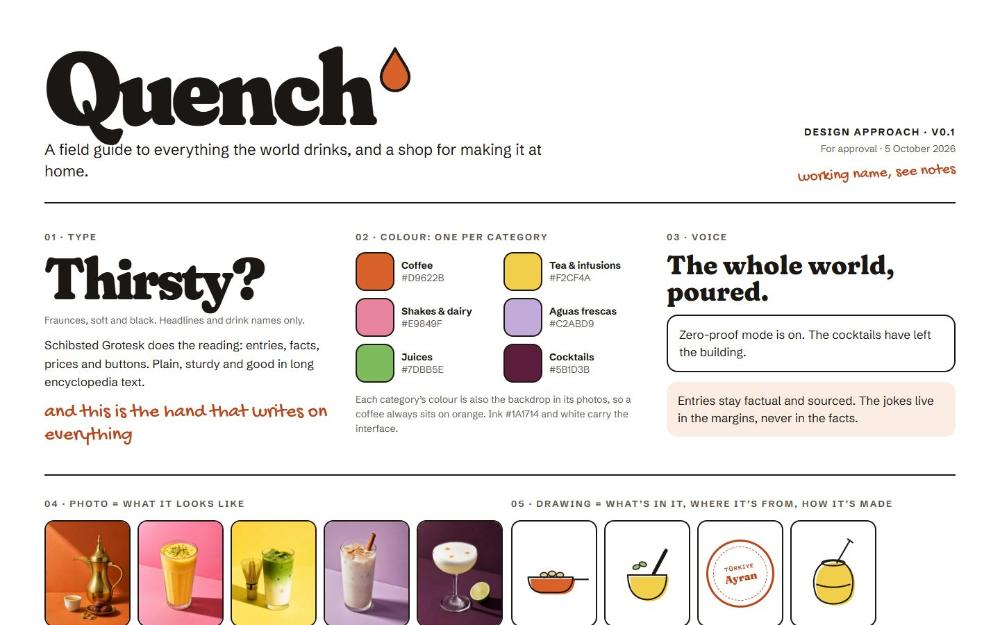
The approach board Two immersive directions
A: every drink is a full-screen color room you can take apart. B: a night map leads to market stalls and a passport. Both used the same drinks.
- Take it apart
- Night map
- Passport
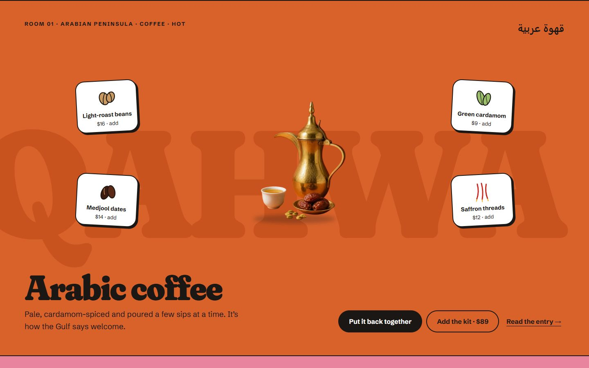
Hero 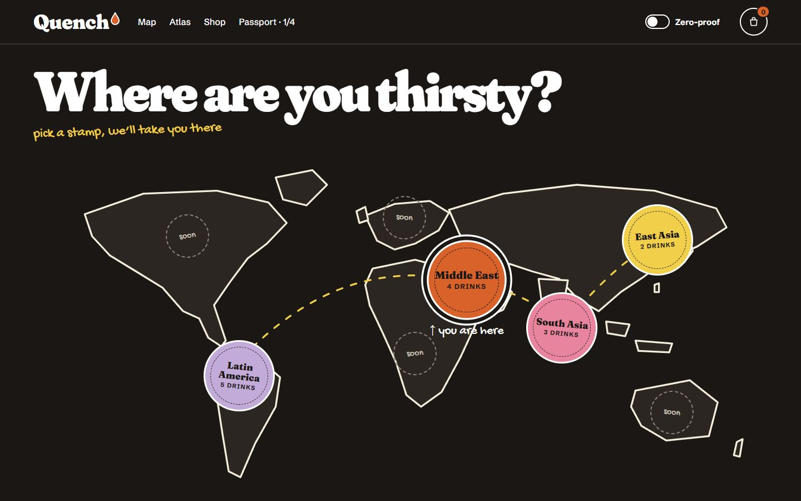
Direction B: the map The final direction
Rooms for the home and drink pages, the map and passport for getting around, markets in place of browsing, and the filters kept as the practical layer behind them. Phone layouts and a handoff board followed.
- Front and back of house
- Phone layouts
- Handoff board
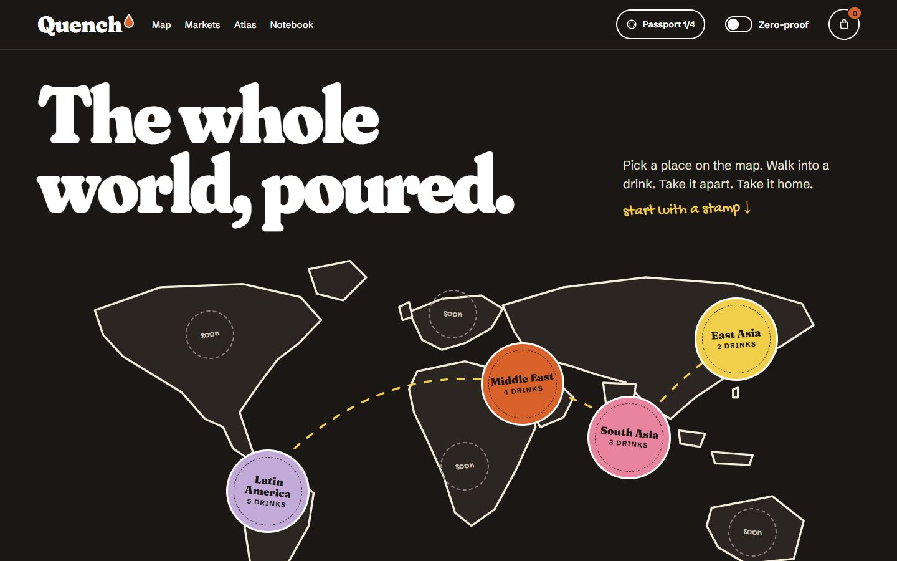
Hero 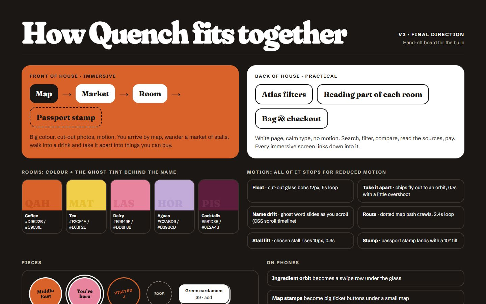
The handoff board Built
“The whole world, poured.”
The working site: twenty-two pages, fourteen drinks with studio-style images, four markets, the Atlas filters and a checkout.
- 14 drink rooms
- 4 markets
- Atlas filters
- Bag and checkout
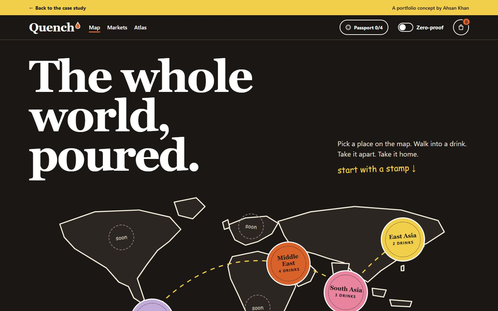
Hero 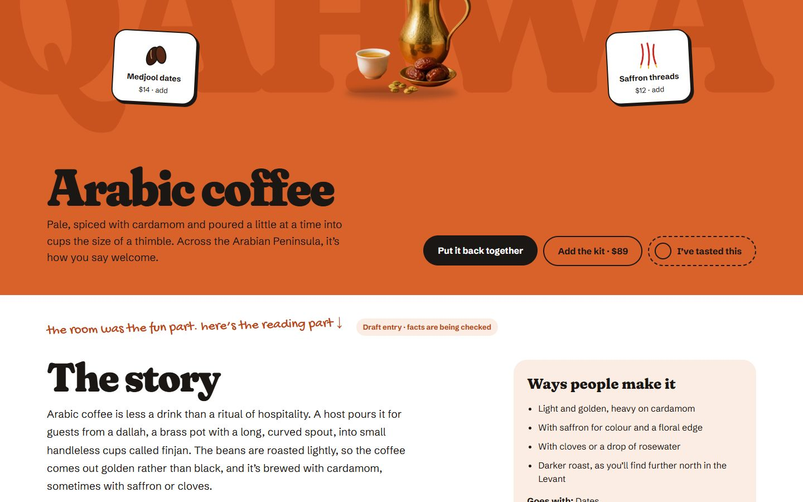
Taken apart: every ingredient can go in the bag Restocked
Thirty-three more drinks with studio-style images, and Europe, Africa, North America and Oceania in place of the “soon” stamps. Three new categories (sodas and ferments, hot chocolate, and wine, beer and sake), new ingredient drawings, and a faster first visit: the fonts now come with the site instead of from a second server.
- 47 drink rooms
- 8 markets
- 3 new categories
- Faster first load
Hero 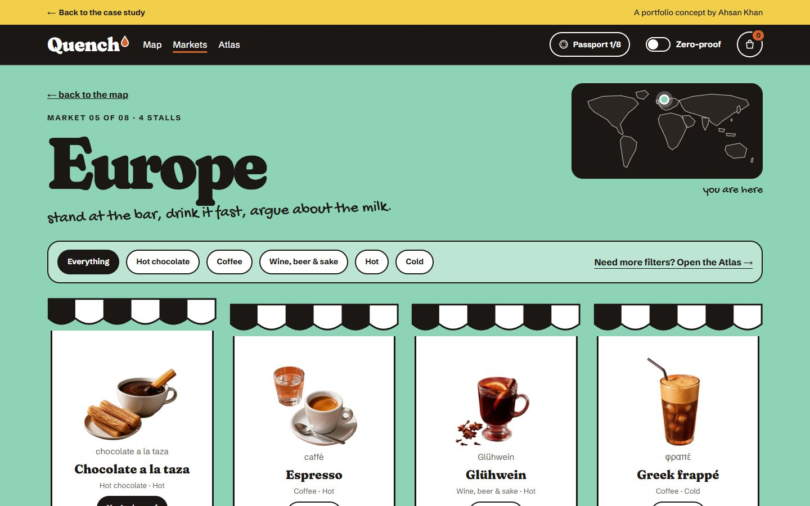
One of the four new markets: Europe Checked and doubled
Every entry was traced to the sources it now cites, from UNESCO records and national food standards to dictionaries and peer-reviewed papers. Folklore was cut or told as a story. Forty-seven more drinks, mostly juices, punches, teas and shakes, bring the shop to ninety-four, with eleven to thirteen stalls in every market and only ten drinks with alcohol.
- 47 drink rooms
- Sources on every page
- 6 ingredient drawings
- Every entry sourced
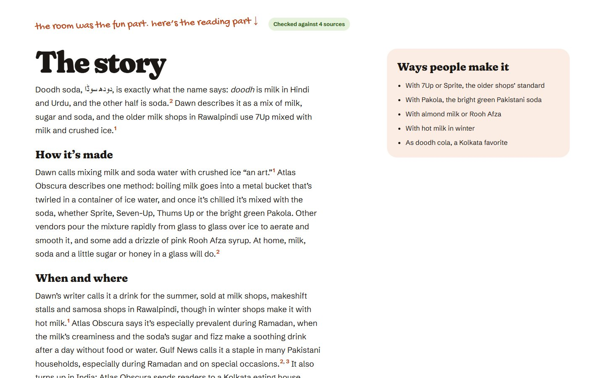
A checked entry 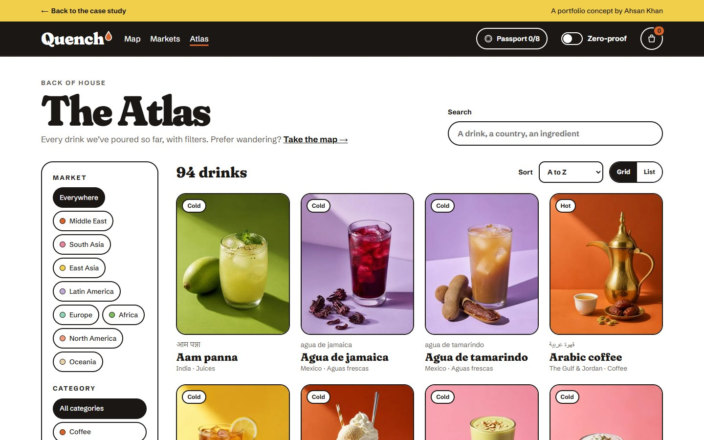
The Atlas, now ninety-four drinks
Palette & typeLoud at the front, quiet at the back.
Where people explore, the site is immersive: a night map, region markets and a full-screen room for each drink. Where people read, compare and pay, it turns into a calm white page.
#1A1714Night map and structure#D9622BCoffee rooms and the Middle East#F2CF4ATea rooms and East Asia#E9849FShakes, lassi and South Asia#C2ABD9Aguas frescas and Latin America#7DBB5EJuices and Africa#8FD3B6Sodas, ferments and Europe#7A4128Hot chocolate only#5B1D3BCocktails only#A3322AWine, beer and sake only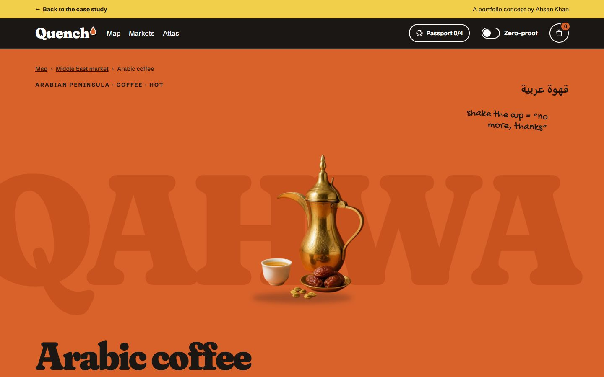
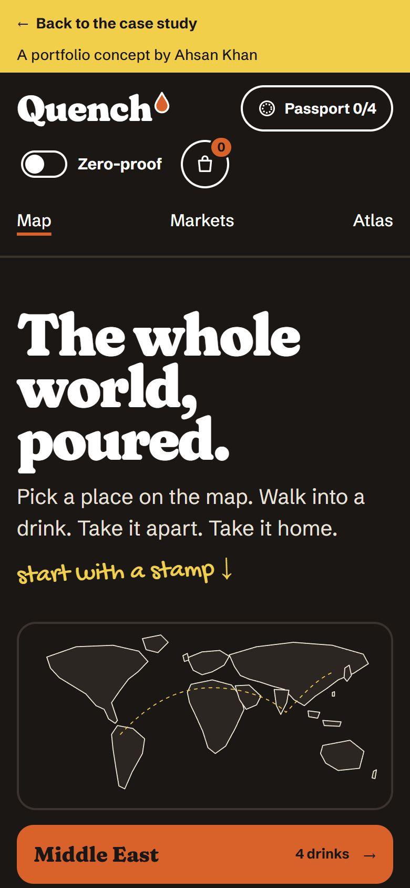
One color per category, everywhere
The color behind a drink in its image is the color of its room and its market, so coffee always feels like coffee.
An image for what it looks like, a drawing for what is inside
Every drink has one studio-style image made with the same recipe. Ingredients, steps and passport stamps are drawn in one ink line.
Take it apart
Each drink room breaks into its ingredients on request. Bought items show a price; the rest say where you already have them: your fridge, the tap.
Build & checksA reference book with a checkout.
A static Astro site where every drink is one Markdown file checked by a schema. Small TypeScript modules add the take-apart rooms, the markets, the Atlas filters, the bag and the passport.
- Astro
- TypeScript
- Content collections
- Hand-written CSS
- Inline SVG illustration
- localStorage
- sharp
What it does
- Ninety-four drink rooms that take apart into buyable ingredients
- A world map with eight region markets and a passport that stamps as you travel
- Zero-proof mode across the site, with alcohol-free swaps
- Atlas filters by market, category, temperature and caffeine, with search, sort and a list view
- A bag and checkout with an age check that appears only for alcohol
How it was checked
- 106 pages built from one schema; a drink with a missing field fails the build
- Fonts and images are served with the site, with half-size images for small screens
- No horizontal scroll at phone width on any page
- Motion switches off under reduced motion
- Nothing is sent anywhere: bag, passport and settings stay in the browser
- Every entry cites the sources it was checked against
Ninety-four drinks from eight markets
- Arabic coffee
- Karak chai
- Turkish coffee
- Ayran
- Sahlab
- Jallab
- Boza
- Lemon and mint
- Qamar al-din
- Qishr
- Sobia
- Turkish tea
- Mango lassi
- Masala chai
- Nimbu pani
- Noon chai
- Falooda
- Sugarcane juice
- Aam panna
- Borhani
- Doodh soda
- Kahwa
- South Indian filter coffee
- Iced matcha latte
- Bubble tea
- Sake
- Gongfu tea
- Makgeolli
- Yuenyeung
- Hwachae
- Kissaten hand-drip coffee
- Sikhye
- Soy milk
- Yuja-cha
- Horchata
- Pisco sour
- Agua de jamaica
- Mate
- Caipirinha
- Champurrado
- Tepache
- Agua de tamarindo
- Café de olla
- Chicha morada
- Limonada de coco
- Ponche navideño
- Tereré
- Chocolate a la taza
- Espresso
- Glühwein
- Greek frappé
- Irish coffee
- Kvass
- Elderflower cordial
- Greek mountain tea
- Julmust
- Kefir
- Kompot
- Sangria
- Wiener Melange
- Bissap
- Buna
- Moroccan mint tea
- Rooibos
- Homemade ginger beer
- Tej
- Avocado smoothie
- Bouye
- Café Touba
- Chapman
- Kenyan chai
- Mageu
- Egg cream
- Old fashioned
- Sweet tea
- Hot apple cider
- Arnold Palmer
- Caesar
- Cold brew coffee
- Eggnog
- Hot cocoa
- Root beer
- Shirley Temple
- Flat white
- ʻOtai
- Lemon, lime & bitters
- Australian iced coffee
- Fresh coconut
- Feijoa smoothie
- Kava
- Koko Samoa
- Lemon-leaf tea
- Long black
- Thickshake
Ahsan Khan: concept, direction and review at every version. Drink images made in Canva.
Quench is a fictional portfolio concept, not a real shop or commissioned client work. Nothing is sold or shipped, prices are illustrative and every drink entry cites the sources it was checked against. No sales or business outcome is claimed.